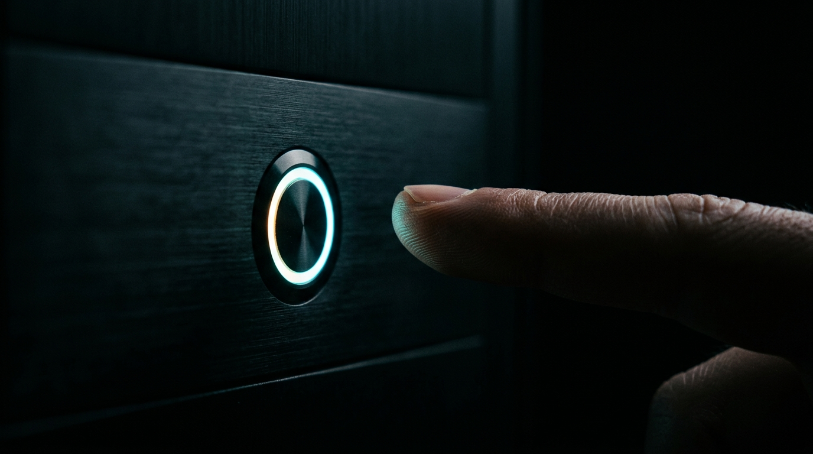
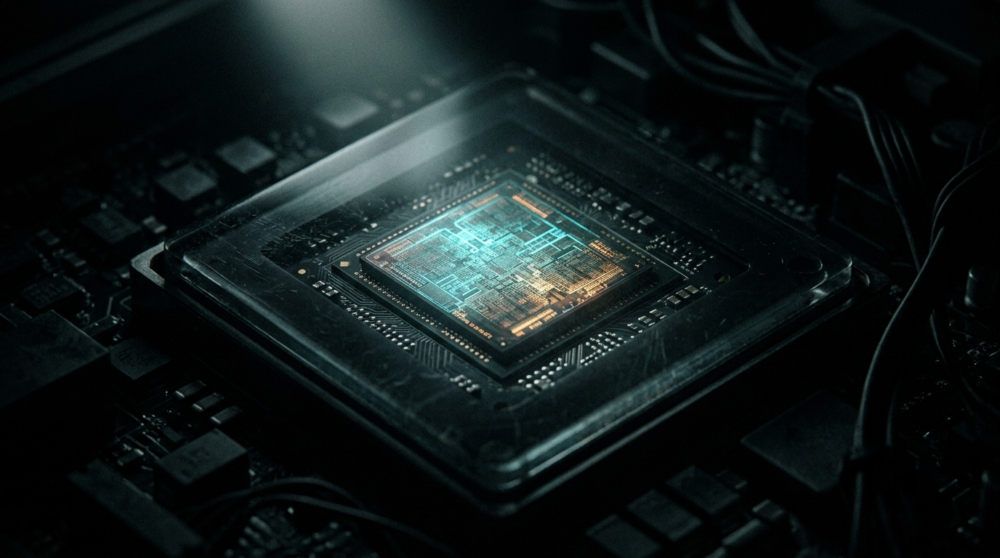
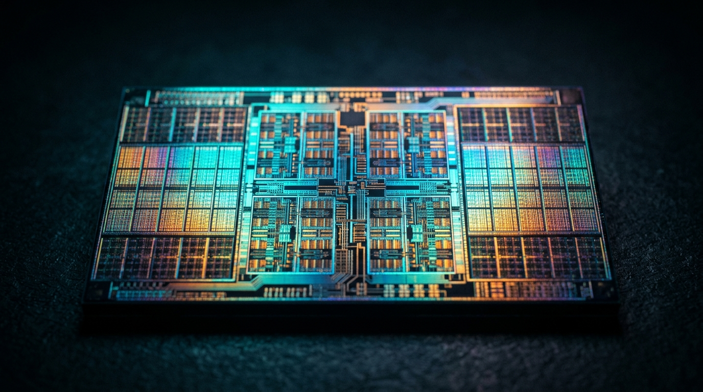
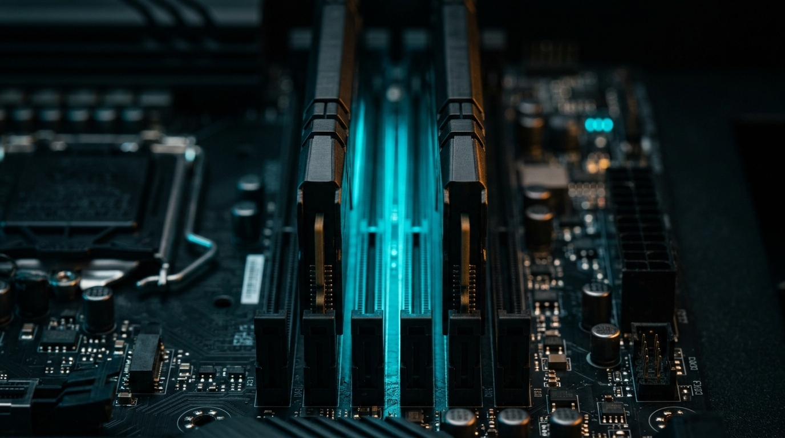
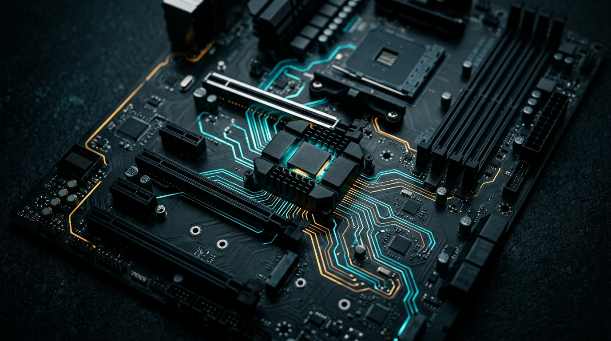
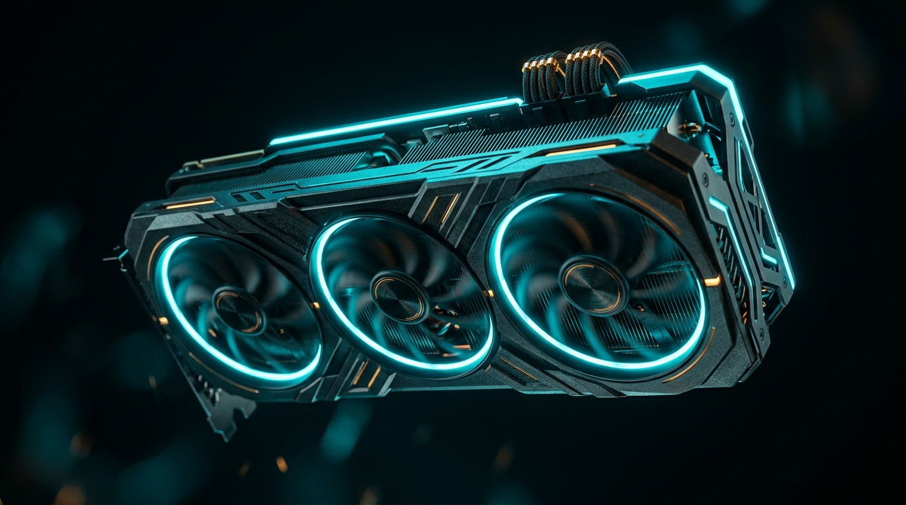
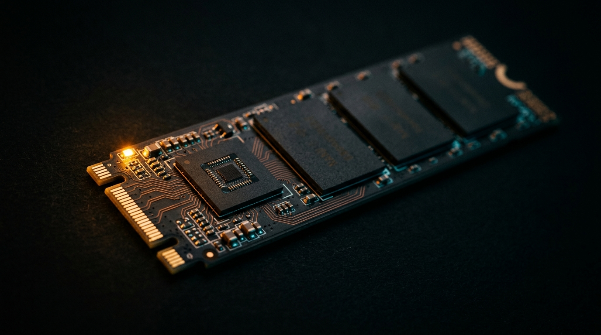
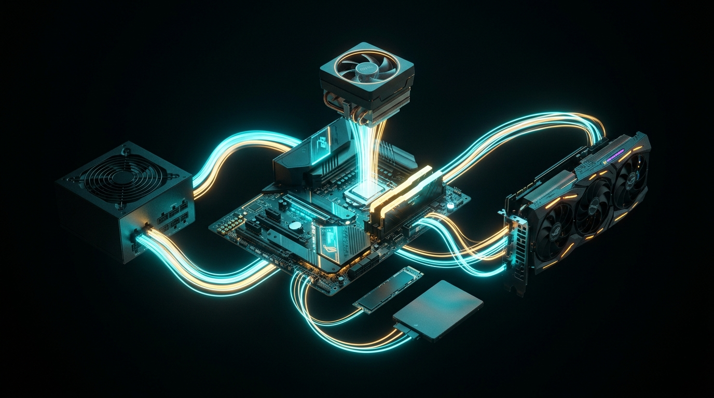

Компьютер начинает работать задолго до того, как «включится». И кнопка питания не включает блок питания — она лишь вежливо просит.

Спойлер: не твой процессор. В каждом ПК живёт второй, скрытый компьютер — и он всегда просыпается первым.
UEFI сделал своё дело и хочет уйти. Осталось найти, проверить и запустить того, кому передать королевство.
Ты просил показать место, где виртуальная кнопка «Завершить работу» дотягивается до физики. Вот оно, с точностью до регистра.

Внутри «процессора» давно нет одного процессора. Там город: фабрики-ядра, склады-кэши, своя железная дорога и таможня с переводчиком.

Каждый бит твоей оперативки — конденсатор, из которого утекает заряд. Вся DRAM — это бесконечное переливание воды, притворяющееся памятью.

Северный мост умер и переехал в CPU. Южный выжил, сменил имя на «чипсет» и стал большим USB-хабом с амбициями.

CPU — четыре профессора, решающие что угодно. GPU — десять тысяч студентов, решающих одно и то же. Вопрос лишь в том, какая у тебя задача.

Внутри SSD нет ничего дискового. Там матрица ловушек для электронов и маленький компьютер, который врёт операционке о том, где что лежит.

Розетка → дежурка → кнопка → PS_ON# → soft-start → VRM → клоки → PSP → reset vector → CAR → memory training → DXE → bootmgfw → ntoskrnl → smss → winlogon → explorer → твой двойной клик → CreateProcess → µops → кэш-линии → row buffer → пиксель на экране. От 50 герц розетки до 5 гигагерц ядра — десять порядков частоты, и ни одного слоя, который можно выкинуть.